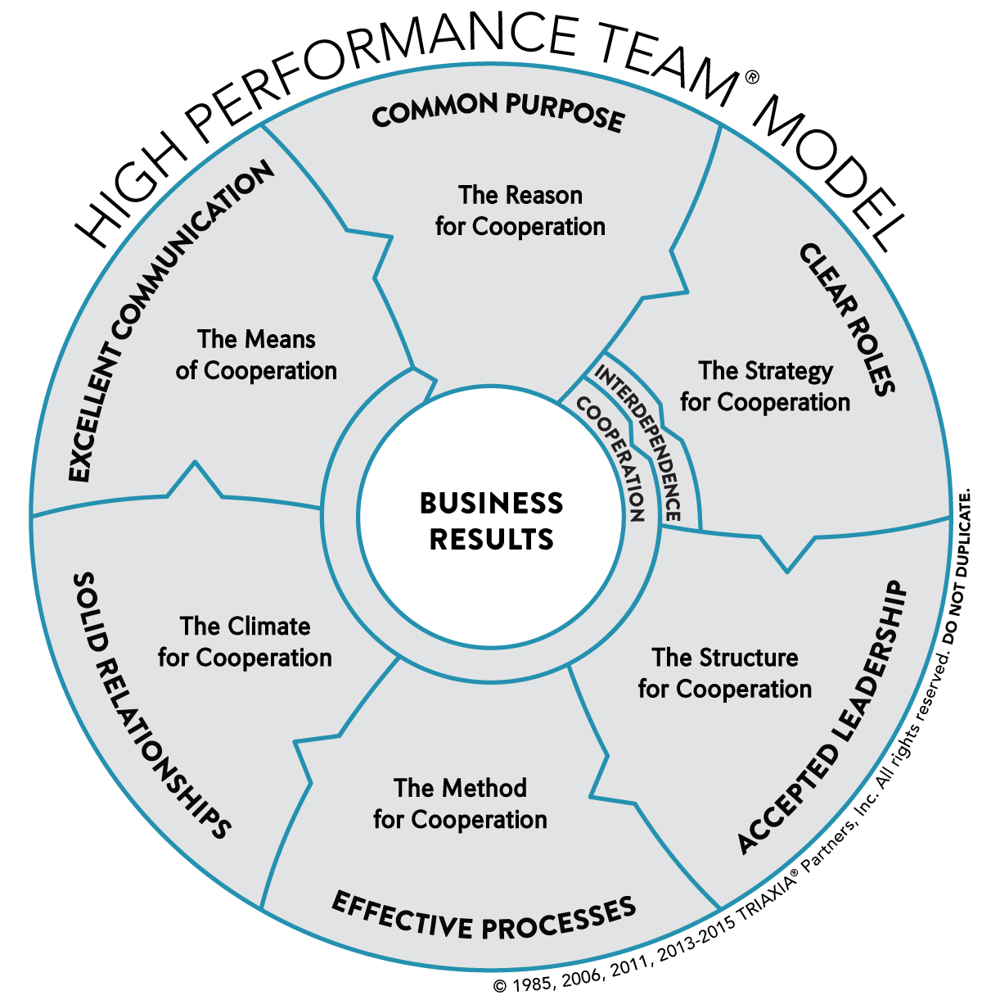

# Scrum basics "I am getting more and more convinced every day that communication is, in fact, what makes or breaks software projects. Programming tools, practices and methods are definitely important, but if the communication fails then the rest is just painting the corpse." - Gojko Adzic Jukka Nikki, Programmer, since: 6502
## Teams
#### [Tuckman team phases](https://en.wikipedia.org/wiki/Tuckman%27s_stages_of_group_development) 
#### [Tuckman team phases](https://en.wikipedia.org/wiki/Tuckman%27s_stages_of_group_development) - teams change over time as members learn - changes in team composition can cause regression - it is useful to have names to phases: - forming, storming, norming, performing, adjourning - and different leadership strategy for each phase: - coordinating (f), coaching (s), empowering (n), supporting (p/a) - performing team is self-organising
## PDCA Cycle
#### [PDCA-Zyklus / Deming-Kreis](https://de.wikipedia.org/wiki/Demingkreis) 
#### [PDCA-Zyklus / Deming-Kreis](https://de.wikipedia.org/wiki/Demingkreis ) - for improvement of product, process or service - four iterative steps: Plan, Do, Check, Act - Variations: PDSA, S (study) instead of C (check) - can be repeated over and over as part of a never-ending cycle of continual learning and improvement
## Kanban
#### [Kanban board](https://verwaltungsrebellen.de/kanban-board-teil-1/) 
#### [Kanban board](https://verwaltungsrebellen.de/kanban-board-teil-1/) - board visualizes the workflow - tasks are pulled from a "backlog" - work flows continuously through the process - work-in-progress limits (WiP) are used to prevent bottlenecks
#### [Kanban card](https://verwaltungsrebellen.de/kanban-board-teil-2/) 
#### [Kanban card](https://verwaltungsrebellen.de/kanban-board-teil-2/) - visual representation of an item of work - In its simplest form, it might contain only a keyword - In more complex forms, it might contain a detailed description of the work, responsible person, and the time required
## Scrum: timeboxes - Sprint (iteration, cycle) - All meetings during sprint
#### [Sprint: 3 weeks](https://www.agileuprising.com/2017/01/01/sprint-schedule-template/) 
#### [Sprint: 3 weeks](https://www.agileuprising.com/2017/01/01/sprint-schedule-template/) - Goal: progress on planned tasks (Sprint Backlog) - Start: task selection (planning meeting) - Daily: discuss active tasks (standups, 15 min) - Weekly: clarify coming tasks (refinement meeting) - Finish: demo (review meeting) and process reflection & improvement (retrospective meeting)
#### [Sprint: 2 weeks](https://3back.com/extras/scrum-tips/start-a-sprint/) 
#### [Sprint: 2 weeks](https://3back.com/extras/scrum-tips/start-a-sprint/) - Team: plans its own work (self-organising) and has needed skills (cross-functional) - Commitment: work team believes it can complete (sprint backlog) - Tradeoff: Commitment (Sprint Backlog) vs Capacity (Team velocity / available time) - Fixed: Time (2 weeks), Quality (Definition of Done) - Improvements: way of working (retrospective) and task clarity (refinement, Definition of Ready)
#### [Scrum prozess](https://verwaltungsrebellen.de/kanban-board-teil-1/) 
#### [Kanban board](https://verwaltungsrebellen.de/kanban-board-teil-1/) - Den Arbeitsfluss ("flow") visualisieren. - Die Menge angefangener Arbeit begrenzen. („WiP“-Limits, kurz für „Work in Progress“) - Aufgaben laufend priorisieren und auf Änderungen reagieren.
## Incremental Software development
#### [Textbook example](https://iansommerville.com/engineering-software-products/) 
## Scrum
## One principle
### [Gojko Adzic](https://gojko.net/) 2009 "I am getting more and more convinced every day that communication is, in fact, what makes or breaks software projects. Programming tools, practices and methods are definitely important, but if the communication fails then the rest is just painting the corpse."
#### Family communication patterns 
## Team phases
### [Scott Downey](https://www.scruminc.com/scrum-shock-therapy-how-to-change-teams/) 2012 "The Framework of Scrum provides many options for customization and interpretation for each Team. In my experience, most teams just starting out are so overwhelmed with choices and potential that they can't find a constructive way to start."
#### Tuckmanns team phases model 
## Team performance
### [Paul J. Zak](https://rework.withgoogle.com/blog/creating-a-high-trust-performance-culture/) 2018 "Trust is a dimension of your business just begging to be improved. The science shows that actively measuring and managing a company's culture for high trust is a powerful lever to improve performance."
#### High performance team model 
## What are patterns?
[A pattern](https://en.wikipedia.org/wiki/Pattern) is a regularity in the world, in human-made design, or in abstract ideas. As such, the elements of a pattern repeat in a predictable manner.
- [Software design pattern](https://en.wikipedia.org/wiki/Software_design_pattern) is a general, reusable solution to a commonly occurring problem within a given context in software design. - [Organisational patterns](https://en.wikipedia.org/wiki/Organizational_patterns) are arrangements or systems of internal relationship which give to any culture its coherence. - [A Scrum Pattern](http://scrumbook.org/) is a general reusable solution to a commonly occurring problem within the Scrum framework.
[A pattern language](https://en.wikipedia.org/wiki/Pattern_language) is an organized and coherent set of patterns, each of which describes a problem and the core of a solution that can be used in many ways within a specific field of expertise.
## Examples of pattern languages
### Coplien & Harrison 2004. - [Organizational Patterns of Agile Software Development](https://en.wikipedia.org/wiki/Organizational_patterns) - "human and organizational dimension of the software improvement process and software project management". - Pattern languages for Organisational Style, People & Code, Piecemeal Growth & Project management. - Examples: Self selecting team, Unity of Purpose, ..
<img alt="Org style" src="images/coplien_2004_organisational_style.png" width="55%">


### Sutherland et al 2019 - ["A Scrum Book"](https://pragprog.com/titles/jcscrum/) - "Scrum Guide describes the basic rules of Scrum, the patterns amplify the guide by showing teams how to solve problems in a specific context." - Product Organization (1-39) and Value Stream (40-94) [Pattern Languages](https://sites.google.com/a/scrumplop.org/published-patterns/book-outline/patlets) extend [core patterns](https://sites.google.com/a/scrumplop.org/published-patterns/book-outline/the-core-patterns-in-brief). - [A Project Language of Highly Effective Teams](https://sites.google.com/a/scrumplop.org/published-patterns/sequences/a-project-language-of-highly-effective-teams) as example of project pattern language.

<img alt="scrum value stream patterns" src="images/sutherland_2019_value_stream.png" width="50%">
### Priest et al late 2010's. - [Sociocracy 3.0 patterns](https://patterns.sociocracy30.org/) - "social technology for evolving agile and resilient organizations" - Pattern groups for Co-Creation And Evolution, Peer Development, Enablers Of Collaboration, Building Organizations, Bringing In S3, Defining Agreements, Focused Interactions, Meeting Practices, Organizing Work, Organizational Structure - Examples: Navigate Via Tension, Consent Decision Making, ..

### Other Organisational pattern languages - [Agile & Lean Software architecture practice patterns](https://www.amazon.de/-/en/dp/B07X8289XR/) by Stefan Toth. - [Organizational change Patterns](https://fearlesschangepatterns.com/) by Linda Rising & Mary Manns. - [Liberating structures engagement patterns](http://www.liberatingstructures.com/) by Keith McCandless and Henri Lipmanowicz.
## organisational improvement
### apply organisational patterns 1. Find the weakest part of your organization 2. Find a pattern that is likely to strengthen it 3. Apply the pattern 4. Measure the improvement or degradation 5. If the pattern improved things, go to step 1 and find the next improvement; otherwise, undo the pattern and try an alternative.
## DokSafe Pattern Language?
### Accept known state - Scrum is not a problem: how our industry uses it is. - There's no stable body of knowledge, so we can and need to selects and document our own practices. - It is useful to try to align terminology on single authoritative source.
### Create initial prototype process - envision default process which adresses current needs. - make fork of selected industry practices and share them as pattern language.
### Design for defaults - each team should be aware of default process, which they can tailor for own needs. - make sure it's easy to do right thing: [selecting default](https://jamesclear.com/design-default) should be easy and not selecting default should be possible.
### Invite to co-develop - record lessons learned, evaluate where we are as company and as industry, and see if pattern language needs adjusting - steering of pattern language maintenance is ongoing process, see [Bird of Feather §5](https://sites.google.com/a/scrumplop.org/published-patterns/product-organization-pattern-language/birds-of-a-feather)
## How to start? First make plan.. together
### Coplien 14.6.2020 - "Let me suggest that we run a two-day [Scrum patterns seminar](https://agilix.nl/scrum-patterns/) together." - "it is an excellent event, and very suitable both for team building and for creating a concrete improvement plan." - "I'd much prefer to do it on-site if your situation and the timing allow."
## Project pattern language
### Sutherland & al 2014 - ["Teams that Finish Early Accelerate Faster: A Pattern Language for High Performing Scrum Teams"](https://www.semanticscholar.org/paper/Teams-That-Finish-Early-Accelerate-Faster%3A-A-for-Sutherland-Harrison/cb929a4e0a9fd949fbc16bb29da0d8995d23a6bb) - "A subset of the Scrum patterns form a vocabulary of a Pattern Language for Hyper-Productive Teams."
1. [Stable Teams](https://sites.google.com/a/scrumplop.org/published-patterns/product-organization-pattern-language/development-team/stable-teams) 2. [Yesterday’s Weather](https://sites.google.com/a/scrumplop.org/published-patterns/value-stream/estimation-points/yesterday-s-weather) 3. [Swarming: One Piece Continuous Flow](https://sites.google.com/a/scrumplop.org/published-patterns/product-organization-pattern-language/development-team/swarming--one-piece-continuous-flow) 4. [Interrupt Pattern: Illigitimus Non Interruptus](https://sites.google.com/a/scrumplop.org/published-patterns/product-organization-pattern-language/illegitimus-non-interruptus) 5. [Daily Clean Code](https://sites.google.com/a/scrumplop.org/published-patterns/value-stream/good-housekeeping) 6. [Emergency Procedure](https://sites.google.com/a/scrumplop.org/published-patterns/product-organization-pattern-language/emergency-procedure) 7. [Scrumming the Scrum](https://sites.google.com/a/scrumplop.org/published-patterns/retrospective-pattern-language/scrumming-the-scrum) 8. [Happiness Metric](https://sites.google.com/a/scrumplop.org/published-patterns/retrospective-pattern-language/happiness-metric) 9. [Teams that Finish Early Accelerate Faster](https://sites.google.com/a/scrumplop.org/published-patterns/retrospective-pattern-language/teams-that-finish-early-accelerate-faster)
## hyperproductivity patterns
### [Stable Teams §15](https://sites.google.com/a/scrumplop.org/published-patterns/product-organization-pattern-language/development-team/stable-teams) - If you need predictability, then keep teams stable and avoid shuffling people around between teams.
### [Yesterday’s Weather §66](https://sites.google.com/a/scrumplop.org/published-patterns/value-stream/estimation-points/yesterday-s-weather) - If courage emboldens the team to set overoptimistic goals, then refer to the work Done in the last Sprint to forecast the work for the upcoming Sprint.
### [Swarming: One Piece Continuous Flow §25](https://sites.google.com/a/scrumplop.org/published-patterns/product-organization-pattern-language/development-team/swarming--one-piece-continuous-flow) - Working on too many things at once reduces velocity and the quality of work. Therefore, have the whole Development Team work together on one Product Backlog Item at a time.
### [Interrupt Pattern: Illigitimus Non Interruptus §33](https://sites.google.com/a/scrumplop.org/published-patterns/product-organization-pattern-language/illegitimus-non-interruptus) - If various stakeholders and emergent requirements interrupt the team, crippling its progress, then explicitly allot time for interrupts and time-box unplanned work to that budget.
### [Good Housekeeping aka Daily Clean Code §80](https://sites.google.com/a/scrumplop.org/published-patterns/value-stream/good-housekeeping) - Where there’s a mess, you lose time and energy finding where and what to start on. Therefore, maintain a completely clean product and work environment continuously, or clean at the end of each day.
### [Emergency Procedure §32](https://sites.google.com/a/scrumplop.org/published-patterns/product-organization-pattern-language/emergency-procedure) - Inevitably, unanticipated problems arise and cause the Sprint Goal to slip out of reach, but waiting until the Sprint Review derails the whole Sprint. Therefore, reevaluate the work plan mid-Sprint and escalate the solution with a predefined procedure.
### [Scrumming the Scrum §92](https://sites.google.com/a/scrumplop.org/published-patterns/retrospective-pattern-language/scrumming-the-scrum) - Scrum is more than just doing work; it’s also about improving the way we work. Therefore, resolve the most important impediment by putting one in the Product Backlog every Sprint.
### [Happiness Metric §91](https://sites.google.com/a/scrumplop.org/published-patterns/retrospective-pattern-language/happiness-metric) - If a growing list of improvement activities dampens the team's passion for the work, then prioritize the items on the impediment list in order of the team’s passion to solve them.
### [Teams that Finish Early Accelerate Faster §74](https://sites.google.com/a/scrumplop.org/published-patterns/retrospective-pattern-language/teams-that-finish-early-accelerate-faster) - Teams often take too much work into a Sprint and cannot finish it. Failure to attain the Sprint Goal prevents the team from improving. Therefore, take less work into a Sprint.
# team patterns
### [Collocated Team §8](https://sites.google.com/a/scrumplop.org/published-patterns/product-organization-pattern-language/development-team/collocated-team) - If the complexity of collaborative development demands high-fidelity communication, then locate the team together within talking distance.
### [Small Teams §9](https://sites.google.com/a/scrumplop.org/published-patterns/product-organization-pattern-language/development-team/small-teams) - Having many people working on the same thing inflates communication overhead. Therefore, use small teams of people working on serialized work rather than striving for false parallelism.
### [Cross-Functional Team §10](https://sites.google.com/a/scrumplop.org/published-patterns/product-organization-pattern-language/development-team/cross-functional-team) - Organizations often organize around areas of competence, but it is too slow to coordinate across these boundaries. Therefore, the team as a whole should embody all the talent necessary to deliver product.
### [Autonomous Team §16](https://sites.google.com/a/scrumplop.org/published-patterns/product-organization-pattern-language/development-team/autonomous-team) - If policies and procedures applied across multiple contexts are dysfunctional, then the Scrum Team governs its work free from external control, and the Development Team manages its own work.
### [Self-Organising Team §17](https://sites.google.com/a/scrumplop.org/published-patterns/product-organization-pattern-language/development-team/self-organizing-team) - Specialized skills can't accomplish work without coordination. Therefore, the Development Team organizes itself to get its work Done.
## Additional patterns
### [Enabling specification §63](https://sites.google.com/a/scrumplop.org/published-patterns/value-stream/product-backlog/enabling-specification) - Unexplored requirements cause unpleasant surprises. An Enabling Specification is a specification rich enough that someone reasonably skilled in the discipline can implement a solution without substantial subsequent clarification with people outside the Scrum Team.
### [Refined Product Backlog §64](https://sites.google.com/a/scrumplop.org/published-patterns/value-stream/product-backlog/refined-product-backlog) - The Scrum Team (particularly the Product Owner and Development Team) should meet frequently to properly order the Product Backlog and to break down the most imminent large PBIs into smaller ones.
### [Small Items §58](https://sites.google.com/a/scrumplop.org/published-patterns/value-stream/small-items) - Big ideas are great to have but the devil is in the details. Large items cloud understanding of important details, and misunderstanding causes surprises. The team can reduce schedule surprises by administering and working on Small Items.
### [Set-Based design §42](https://sites.google.com/a/scrumplop.org/published-patterns/value-stream/set-based-design) - There may be many possible solutions to a complex problem. It is often impossible to predict which is best. Therefore: develop many options in parallel, fixing only the critical constraints up front.
### [Whack the Mole §81](https://sites.google.com/a/scrumplop.org/published-patterns/value-stream/whack-the-mole) - There is always a tension between advancing product functionality and raising product quality. Issues that the team doesn’t fix now tend to accumulate, or become forgotten or lost in a defect-tracking system. The team should hold it to be a higher priority to fix a broken product.
## Closing “build the right process and you’ll build the right product”
### Further reading & sources - [Scrum: A Brief History of a Long-Lived Hype](https://guntherverheyen.com/wp-content/uploads/2020/12/Scrum-A-Brief-History-of-a-Long-Lived-Hype-Paper.pdf) - [Scrum patterns website](http://scrumbook.org/) - [Scrum Plop website](http://www.scrumplop.org/) - [One piece continous flow vs. swimline scrum vs. kanban](https://www.scruminc.com/alternative-to-kanban-one-piece/) - [Scrum "Schock Therapy"](https://www.scruminc.com/scrum-shock-therapy-how-to-change-teams/) - [How Scrum Patterns help you become a better Scrum Master](https://www.linkedin.com/pulse/how-scrum-patterns-help-you-become-better-master-karel-smutn%C3%BD-1e/) - [Scrum patterns training](https://agilix.nl/scrum-patterns-training/?lang=en)
## extras
## History of Scrum = it was always set of Organisational Patterns

### Schwaber 1995 - ["SCRUM Development Process"](https://www.semanticscholar.org/paper/SCRUM-Development-Process-Schwaber/8e1c7055ee7f45581fb19934d5aef2b48b931802) - Called process and methodology in first papers, later defined as framework - Idea of Daily Scrum is from Dr.Dobb's article of organizational patterns research on the Borland QPW project. - Influenced heavily by Nonaka & Takeuchi: "The New New Product Development Game" (1986) & Seci-Model (1990)
### Cunningham 1995 - ["EPISODES: A Pattern Language of Competitive Development"](episodes.fed.wiki.org/) - "We find ourselves unable under competitive pressure to make the kind of careful decisions we would like. These patterns tell what decisions can be made, in fact should be made, to maintain continuous forward motion through iterative development."

### Coplien & Schmidt 1995 - ["A Development Process Generative Pattern Language"](https://www.semanticscholar.org/paper/A-development-process-generative-pattern-language-Coplien/04d923750e0beea90c3ec84082ad4bcc1ac690b0) - "patterns can be used to build an organization and to guide its development process in the domain of software development." - "a good set of organizational patterns helps to (indirectly) generate the right process."

### Cockburn 95 - 96 - ["Patterns of Project Management Risk Reduction"](https://www.google.com/url?sa=t&rct=j&q=&esrc=s&source=web&cd=&cad=rja&uact=8&ved=2ahUKEwi42oWh1PXpAhUE66QKHWv6AlwQFjAAegQIAxAB&url=https%3A%2F%2Falistair.cockburn.us%2Fwp-content%2Fuploads%2F2018%2F02%2F73b65078-ec7f-44b5-b141-0b120336e767.pdf&usg=AOvVaw3xdKakfBBOZP0Smo4EWF9w) - "Each situation results from some force getting out of balance. So, one pattern may remedy several situations." - "Similarly, any one situation has several possible remedies, depending on small variations in the situation, or your personal management style."
### Beedle et al. 1997. - ["SCRUM: An extension pattern language for hyperproductive software development"](https://www.semanticscholar.org/paper/SCRUM%3A-An-extension-pattern-language-for-hyper-Beedle-DeVos/8658dbfb4bc0f8474a513adf0b51b1cfc2419a02) - "When combined together, SCRUM and other organizational patterns, and specially those by Coplien, provide with an adaptive, yet well structured software development organization." - Beedle's work with Sutherland brought the pattern perspective to Scrum.

### Beedle et al 2010 (working paper) - ["Essential Scrum Patterns"](https://www.google.com/url?sa=t&rct=j&q=&esrc=s&source=web&cd=&ved=2ahUKEwiAi7CTrfLpAhVnzqYKHXATCmcQFjAAegQIAxAB&url=http%3A%2F%2Fwww.hillside.net%2Fplop%2F2010%2Fpapers%2Fbeedle.pdf&usg=AOvVaw1ykjztZJZ-eRWt7WUQL2ti) - Product Backlog, ProductOwner, ScrumTeam, ScrumMaster, Sprint Backlog, Sprint Planning Meeting, Sprint, Daily Scrum, Sprint Burndown, Sprint Review Meeting - Close to Essential: Sprint Retrospective, Release Planning Meeting, Release Burndown, Visible Status